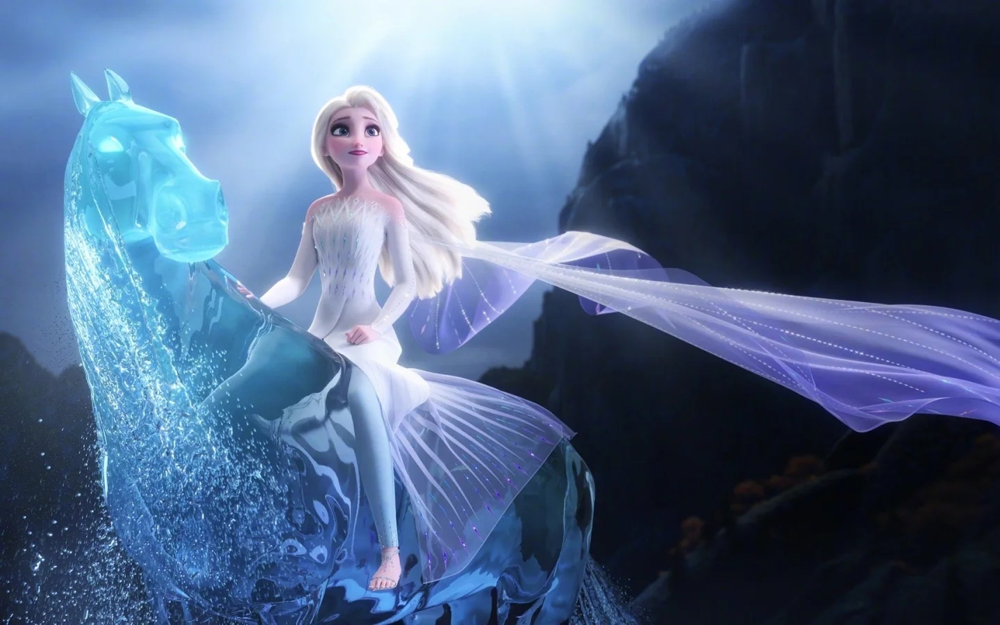

🎵 歌曲 · F2歌曲
Show Yourself F2歌曲
艾莎与伊杜娜 · Idina Menzel / Evan Rachel Wood · 时长 4:20
📖 Show Yourself
艾莎与伊杜娜 · Idina Menzel / Evan Rachel Wood · 时长 4:20
一、歌曲基本信息
演唱者
Idina Menzel & Evan Rachel Wood（艾莎 & 伊杜娜）
出自
冰雪奇缘2 (Frozen II, 2019)
词曲作者
Kristen Anderson-Lopez & Robert Lopez
《Show Yourself》是《冰雪奇缘2 (Frozen II, 2019)》中的经典歌曲，由Kristen Anderson-Lopez与Robert Lopez创作。这首歌在电影中承担着重要的叙事功能，是角色情感表达和剧情推进的关键节点。（来源：迪士尼官方 / Frozen原声带）
>
二、完整歌词（中英对照 · 逐句交互 · 播放高亮）
🎵
Show Yourself
Idina Menzel & Evan Rachel Wood（艾莎 & 伊杜娜）
▶
VERSE 1 · 主歌1
Every inch of me is trembling
我全身都在颤抖
💡 点击查看逐句考据
📝 逐句考据
我浑身上下都在颤抖，这不是寒冷，而是最深处的战栗。艾莎循着第五种精灵的歌声追入秋林，此刻的她既恐惧又期待——恐惧于未知的力量，更期待这可能通往“我是谁”的答案。越靠近真相，身体越诚实。
But not from the cold
但不是因为寒冷
💡 点击查看逐句考据
📝 逐句考据
可这颤抖并非因为寒冷，剧本和音乐在此用一个否定句，把艾莎的感官从外界拉回内心。她在告诉自己：我早已习惯了冷，我颤抖的是什么？为下文的“熟悉感”埋下伏笔。
Something is familiar
某种熟悉的感觉
💡 点击查看逐句考据
📝 逐句考据
有什么东西如此熟悉，歌词点破艾莎心中的奇异感觉。母亲生前唱的摇篮曲、那个始终追不上的声音——她认出了这歌声。这种“似曾相识”是迪士尼“归于主题”式情感叙事的手笔：你早就在心里唱过它。
Like a dream I can reach but not quite hold
像一个我能够触及却无法抓紧的梦
💡 点击查看逐句考据
📝 逐句考据
像一个我能触碰到却握不住的梦，道尽艾莎多年的处境：力量触手可及却无法控制，真相近在眼前却抓不住。伸手与落空之间的张力，是全句的情感核心。
I can sense you there
我能感觉到你在那里
💡 点击查看逐句考据
📝 逐句考据
我能感觉到你就在那里，艾莎断定声音源于实体的某处，而不再是幻觉。这给了她行动的支点——从“被声音困扰”转向“主动追寻”，角色的主动性在这一句升起。
Like a friend I've always known
像一个我一直认识的朋友
💡 点击查看逐句考据
📝 逐句考据
像一个我早已认识的朋友，最动人的一句：她已把这只有歌手当成了知己。在艾莎孤独的成长里，那声音是唯一自始至终陪伴着她的“朋友”，音乐在此从困惑转向依恋。
VERSE 2 · 主歌2
💡 点击查看逐句考据
📝 逐句考据
我就要到了，简短三个词却是一大步。艾莎走过漫漫长路（从离开阿伦黛尔、驯服水灵至此），终于逼近答案。句子极短，恰好是行前屏息的一瞬。
And it feels like I am home
感觉就像回到了家
💡 点击查看逐句考据
📝 逐句考据
而我觉得自己终于回到了家，这是全曲第一处情感落点。Ahtohallan在证据里早有应验——“去寻找那条河，那里没有欺骗”。对漂泊多年的艾莎而言，真相之地就是她的家；长笛般的空灵配乐烘托出“归属”的释然。
I have always been a fortress
我一直都是一座堡垒
💡 点击查看逐句考据
📝 逐句考据
我一直像一座堡垒，冰山喻再度出现。艾莎回顾自己用冷漠与距离筑起的高墙——这是她保护别人、也囚禁自己的防御工事。歌词直面承认：强大如堡垒，实则是孤独的囚牢。
Cold secrets deep inside
内心深处藏着冰冷的秘密
💡 点击查看逐句考据
📝 逐句考据
冰冷而秘密深埋其中，扣住“Conceal, don't feel”的旧训。童年的命令让她把秘密压进心底最深处，连自己也看不清。这句是向母亲忏悔：我辜负了你教我的“隐藏”。
You have secrets too
你也有秘密
💡 点击查看逐句考据
📝 逐句考据
你也有自己的秘密，笔锋一转。艾莎从自省转向理解母亲——她不是唯一把秘密藏起来的人。骇人的“真相”在这一刻被温柔化：母亲也有难言之隐。
But you don't have to hide
但你不必再隐藏
💡 点击查看逐句考据
📝 逐句考据
可你不必再隐藏，这是全曲最重要的和解句。艾莎在劝慰/祝福母亲的同时，其实在宽恕自己多年的自我被迫隐藏。它宣告：不管你是什么、来自哪里，在这里都不必躲了。音乐在此达到“接纳”的暖调顶点。
CHORUS · 副歌
💡 点击查看逐句考据
📝 逐句考据
现身吧，首次唱出主题词。艾莎发自肺腑地呼唤那声音，此时“show yourself”的对象尚是母亲/第五种精灵，充满渴望与试探。考据：它是向世界讨要“看见真实的我”的开场。
I'm dying to meet you
我渴望见到你
💡 点击查看逐句考据
📝 逐句考据
我急切地想见你，把急切感推到极致。多年追寻在此凝成一句话，柯尔斯滕·安德森与洛佩兹夫妇用口语化的 “dying to” 写出积压的渴望。
💡 点击查看逐句考据
📝 逐句考据
现身吧，第二次呼唤。情绪从试探升为恳求，艾莎已认定答案就在眼前。两处“Show yourself”虽同词，情感递进不同：第一约是渴望，这里是恳求。
💡 点击查看逐句考据
📝 逐句考据
轮到你了，主动让渡的一刻。她意识到自己一直被动等待，此刻轮到对方显露真容；也暗示“该你走出阴影了”。主客体关系在此翻转，艾莎掌握主动。
Are you the one I've been looking for all of my life?!
你就是我一生都在寻找的那个人吗？！
💡 点击查看逐句考据
📝 逐句考据
你是不是我这一生都在寻找的那个人？疑问兼惊叹。她不敢全信，又无法不信。加重的感叹号写出近乎窒息的期待——这已不仅是见母亲，而是寻找自我存在的证明。
💡 点击查看逐句考据
📝 逐句考据
现身吧！第三次，带感叹号，语气最重。与前两次的恳切不同，这是带着决心的命令式呼唤：神迹啊，别让我再猜了。
VERSE 4 · 主歌4
I'm ready to learn...
我已准备好学习……
💡 点击查看逐句考据
📝 逐句考据
我已准备好聆听……三点省略号是颤抖的留白。艾莎把身段放低到“学生”姿态，宣告她愿意接受任何真相——哪怕是颠覆她全部人生的那个。
💡 点击查看逐句考据
📝 逐句考据
啊啊啊啊（第一组吟唱），无词咏叹带出宗教仪式般的神圣感。这是通向真相的震动，伴奏里八音盒般的高音仿佛在回应她。考据：用吟唱替代叙述，表达言语之外的心灵震颤。
Ah-ah-ah-ah-ah
啊——啊——啊——啊——啊
💡 点击查看逐句考据
📝 逐句考据
啊啊啊啊啊（延伸吟唱），音节拖长，情绪随和声上扬。像是她与那声音在对话，一唱一和，距离被进一步拉近。
I've never felt so certain
我从未如此确定
💡 点击查看逐句考据
📝 逐句考据
我从没如此确定过，走进神谕之河的艾莎一反常态地笃定。向来审慎的她，此刻被某种超越理性的直觉填满——音乐随之转大调，明亮坚定。
All my life I've been torn
一生我都感到撕裂
💡 点击查看逐句考据
📝 逐句考据
我这一生都在被撕扯，童年“隐藏魔法”与人性的矛盾终被道破。她承认自己长久挣扎于“该怎样活着”，这句是全曲向自我关切的回归。
But I'm here for a reason
但我来这里是有原因的
💡 点击查看逐句考据
📝 逐句考据
但我来到这里是有原因的，把个人命运接上“使命”的宏大叙事。她不再是离家出走的逃亡者，而是被召唤至此的追寻者。
VERSE 5 · 主歌5
Could it be the reason I was born?
会不会就是我出生的原因？
💡 点击查看逐句考据
📝 逐句考据
这会不会就是我出生的理由？全曲的命题句之一。艾莎第一次从“我是诅咒”翻转成“我是被选中的”，身份焦虑在此露出被解答的曙光。
I have always been so different
我一直都如此不同
💡 点击查看逐句考据
📝 逐句考据
我一直都那么与众不同，她坦然承认自己与常人的差异——这是多年被恐惧压着的自我认知，如今终于敢说出口。
Normal rules did not apply
寻常规则不适用于我
💡 点击查看逐句考据
📝 逐句考据
寻常的规则对我并不适用，呼应前文“无迹可寻”。魔法让她游离于常规之外，这曾是她的枷锁，现在是她走上前路的通行证。
💡 点击查看逐句考据
📝 逐句考据
会是这一天吗？迟疑写在问句里。她希望答案就在眼下，又怕希望落空。短短五词，忐忑尽现。
💡 点击查看逐句考据
📝 逐句考据
你是否就是那条路，把“声音乎=母亲乎”升华为“真理之路”。她在问：你是我解开人生的钥匙吗？
I finally find out why!!?
让我终于找到原因！！？
💡 点击查看逐句考据
📝 逐句考据
我终于要弄清为什么了？！疑问号与感叹号并存，写出“既确定又难以置信”。真相近在咫尺的冲击让标点都失了章法。
CHORUS · 副歌
💡 点击查看逐句考据
📝 逐句考据
现身吧！第四处。与前几处呼告不同，这次近乎笃定的命令——她已循声而来确认了方向，语气中带着“我来了，请你也出来”的笃定。
I'm no longer trembling!
我不再颤抖！
💡 点击查看逐句考据
📝 逐句考据
我不再颤抖了！与前开口白“Every inch trembles”形成呼应闭环。她从战栗走向坚定，全曲在此完成第一次情绪立姿：追到答案的自己，连颤抖都痊愈了。
💡 点击查看逐句考据
📝 逐句考据
我就在这里，宣告存在的时刻。她不再是姗姗来迟的追寻者，而是堂堂正正站在答案面前的“是我”。
I've come so far!
我已走了这么远！
💡 点击查看逐句考据
📝 逐句考据
我走了这么远！回望征程——从畏光逃窜的公主到跨海越林的女王，这一句是她给旅途的注脚。
You are the answer I've waited for all of my life!
你就是我一生等待的答案！
💡 点击查看逐句考据
📝 逐句考据
你就是我等了一生的答案！情感推向极盛。她几乎已认定眼前必将显现的人正是所有疑问的终点。
💡 点击查看逐句考据
📝 逐句考据
哦，现身吧，从呐喊转为一声温柔的轻叹。填满笃定之后的唯一渴求：让我真正看见你。
VERSE 7 · 主歌7
Let me see who you are...
让我看看你是谁……
💡 点击查看逐句考据
📝 逐句考据
让我看看你是谁……省略号里是屏息的等待。她要的不是又一个隐喻，而是具象的真容——无论是母亲还是更深层的自己。
💡 点击查看逐句考据
📝 逐句考据
现在来到我身边，她张开双臂主动迎向答案，姿态由“等”转为“请”。音乐在此舒展，仿佛神迹将启。
💡 点击查看逐句考据
📝 逐句考据
打开你的门，求告之门。艾莎祈求对方卸下防备、接纳她进入，与歌末“她推开母亲的秘密之门”前后呼应。
💡 点击查看逐句考据
📝 逐句考据
别让我再等待，多年煎熬凝成一句催促，写出了朝思暮想的量变。
One moment more!
再多一刻也不行！
💡 点击查看逐句考据
📝 逐句考据
再多一刻也等不了了！加叹号强化焦灼。真相就在门后，多忍一秒都是折磨。
Oh, come to me now
哦，现在来到我身边
💡 点击查看逐句考据
📝 逐句考据
哦，现在到我身边来，第二度呼唤，比上一处更迫切、更像恳求拥抱。
VERSE 8 · 主歌8
💡 点击查看逐句考据
📝 逐句考据
打开你的门，再次祈愿。重复而情绪递进：若第一次是请求，这次已是恳求。
💡 点击查看逐句考据
📝 逐句考据
别让我再等待，重复的急迫，这里加重到近乎哀求，为接下来的揭晓蓄势。
One moment more!
再多一刻也不行！
💡 点击查看逐句考据
📝 逐句考据
再多一刻也等不了了！句末惊叹把憋了很久的心绪一次引爆。紧接着就是身世真相的降临。
Chorus (young Iduna):
合唱（小伊杜娜）：
💡 点击查看逐句考据
📝 逐句考据
（年轻的伊杜娜）副歌——演唱者切换为母亲年轻时的声音。歌曲视角在此翻转让渡，从“艾莎找母亲”变为“母亲唱给女儿”。
Where the north wind meets the sea
北风与大海相遇之处
💡 点击查看逐句考据
📝 逐句考据
当北风与大海交汇，这句是整部《冰雪奇缘2》的钥匙之一——它精准指向Ahtohallan的地理方位。创作团队在挪威采风时受峡湾、极地风光启发，歌词成为地图谜语。
(Ah-ah-ah-ah)（
啊——啊——啊——啊）
💡 点击查看逐句考据
📝 逐句考据
（啊）母亲回声般的吟唱，与艾莎前文吟唱形成血缘呼应——同一血脉的两种声音在时空里相认。
VERSE 9 · 主歌9
💡 点击查看逐句考据
📝 逐句考据
那里有一条河，直接引出主题河Ahtohallan。“河流”在片中象征记忆与真相（“Ahtohallan，记忆之河”）。
(Ah-ah-ah-ah)（
啊——啊——啊——啊）
💡 点击查看逐句考据
📝 逐句考据
（啊）吟唱再度接续，像河水般绵延，也像两个灵魂逐渐合拍。
💡 点击查看逐句考据
📝 逐句考据
一条满载记忆的河，点明Ahtohallan的本质——万物记忆与真相的存储之所。也是全片“记忆成就今天的你”的母题浓缩。
Come, my darling, homeward bound
来吧，我亲爱的，归家吧
💡 点击查看逐句考据
📝 逐句考据
来吧，亲爱的，启程回家，母亲温柔呼唤女儿归返。这是她们童年没唱完的摇篮曲的续篇，母亲以“指引者”身份现身。
💡 点击查看逐句考据
📝 逐句考据
我终于找到了自己！伊杜娜唱完，艾莎把“found”承接为自己找到答案——母女在同一句词里完成双向的“寻回”。可同时理解为：艾莎找到了母亲，也找到了自我。
💡 点击查看逐句考据
📝 逐句考据
（艾莎与伊杜娜）母女同唱——谱面上两个声部第一次真正合一，象征血脉与使命的又一次接续。
CHORUS · 副歌
💡 点击查看逐句考据
📝 逐句考据
现身吧！这里母女同时喊出，主语从“你”悄然变成“我”——她要艾莎看见她自己。考据：全曲最核心的反转，终极的“Show yourself”指向的是戴花冠的艾莎本人。
Step into your power
踏入你的力量
💡 点击查看逐句考据
📝 逐句考据
走进你的力量，母亲指引艾莎接纳自己的权能。“迈进去”而非“得到”，强调这份力量本就属于她，只是需要她同意住进去。
💡 点击查看逐句考据
📝 逐句考据
成长为你自己，动词“成长”把魔法命定写成主动的自我养成，而非被动承受的诅咒。
Into something new
成为新的自己
💡 点击查看逐句考据
📝 逐句考据
成为全新的存在，艾莎从“第五个精灵”被重新定义为“开创者”。她不再是影片中的固定角色，而变成可以长成的新生命。
You are the one you've been waiting for
你就是那个你一直等待的人
💡 点击查看逐句考据
📝 逐句考据
你才是你一直等待的那位，全曲的点题金句。迪士尼最爱用的“寻找即回望自我”式反转在此达到高潮——她穷尽一生要找的人，就是她自己。
CHORUS · 副歌
💡 点击查看逐句考据
📝 逐句考据
我的一生，艾莎接唱，将自己的全部岁月奉上，作为对母亲指引的回应。
(All of your life)（
你的一生）
💡 点击查看逐句考据
📝 逐句考据
（我的一生）母亲在句中悄声重叠，强调这段时光的共享与传承——两个“一生”在此互证。
💡 点击查看逐句考据
📝 逐句考据
哦，现身吧，第三次、也是最后一次呼喊，对象由“未知”最终落到“我自己”。语气从渴求转为接纳与释然。
💡 点击查看逐句考据
📝 逐句考据
你，单字独立成句，全曲最重的落点之一。“你”不再指他人——艾莎终于把求索的目光转回自身：那个要现身的人，是我。
💡 点击查看逐句考据
📝 逐句考据
啊啊啊啊！加叹号，突破性的力量宣泄。全曲在最高音区炸开，对应艾莎与自我和解后的彻悟——这不是欢快，而是神启式的澎湃。
VERSE 12 · 主歌12
(Ah-ah-ah-ah)（
啊——啊——啊——啊）
💡 点击查看逐句考据
💡 点击查看逐句考据
📝 逐句考据
啊啊啊啊！第二波吟唱，层层加码。此刻的吟唱就是“我就是我”的凯歌，配乐以芬兰民谣式的支声法和声收束全曲。
(Ah-ah-ah-ah)（
啊——啊——啊——啊）
💡 点击查看逐句考据
Ah-ah-ah-ah!!!
啊——啊——啊——啊！！！
💡 点击查看逐句考据
📝 逐句考据
啊啊啊啊！！！三连感叹号，全曲在最强音收束。艾莎以“看见自己”完成整趟旅程——这是《冰雪奇缘2》为Elsa写就的自我加冕礼。
📄 🎯 歌曲定位
艾莎与母亲伊杜娜（Iduna）的二重唱，分别由 Idina Menzel 与 Evan Rachel Wood 演唱，时长约 4 分 20 秒。是艾莎抵达记忆之河 Ahtohallan 后的情感高潮，也是揭开全片核心谜题的揭示性歌曲。
📄 💡 内涵与主题
第五灵之姿 《Show Yourself》的尽头，艾莎在记忆之河中央认领了第五元素的身份——这场相认就是整支歌的高潮。
这是一首关于"整合与自我接纳"的歌，与《Let It Go》的"反抗与独立"形成对照：前者是对世界宣告"我不在乎"，后者是与自我对话、寻找归属。艾莎起初把声音当作外部的存在（"你就是我一生寻找的人吗？"），最终在母亲歌声的引导下领悟"你就是那个你一直等待的人"——答案不在外界，而在自己体内。它关乎理解过去、血脉与力量，最终成为"第五元素（Fifth Spirit）"。
📄 🎬 在电影中的作用

穿越暗海 为抵达阿塔霍兰，她乘水灵 Nokk 迎风破浪——越是贴近答案，越要独自涉过最深的未知。 驭水之灵 · 记忆之河 水是不息的记忆，艾莎的魔法在阿塔霍兰与河流共鸣，也照亮了她真正的来历。
是全片叙事谜题的解答时刻：一直呼唤艾莎的"声音"正是母亲伊杜娜的记忆与爱。艾莎进入冰川、与母亲隔空对唱，确认自己力量的来源（母亲为救父亲 Agnarr 的自我牺牲），并完成为"第五元素"的身份转变。歌曲采样了开篇伊杜娜的摇篮曲式曲目《All Is Found》，在结构上首尾呼应、统一全片。
📄 🌱 来源与创作灵感
据 Disney+ 纪录片《Into the Unknown: Making of Frozen 2》，导演 Jennifer Lee 最终拍板"声音就是母亲"，并召回 Evan Rachel Wood 补录对唱声部。制作过程中团队一度考虑删掉本曲、改用《I'm Home》，所幸在内部试映（Story Trust）中获得好评而保留。Lopez 夫妇随后为艾莎新增了首段歌词"Are you the one I've been looking for?"，使揭示更清晰。
📄 🛠️ 制作过程
由 Kristen Anderson-Lopez 与 Robert Lopez 创作，并与 Dave Metzger、Tim MacDougall 共同制作。配乐由 Christophe Beck 操刀：歌曲从稀疏的钢琴与弦乐起头，随艾莎信心增长逐步叠加合唱、铜管与打击乐，趋向交响终曲般的磅礴。Idina Menzel 的演唱从脆弱气声过渡到充满喜悦与平和的强声。片中被《Into the Unknown》的四音"Ah-ah-ah-ah"动机贯穿，在此与 Wood 的声部交织，象征母女合一。
📄 🔍 解析与评价
许多乐评与观众认为《Show Yourself》才是全片真正的情感顶点与"精神国歌"，其冲击力甚至超过作为奥斯卡提名的《Into the Unknown》。它被解读为对自我认同、接纳独特之处的强有力隐喻，并在 LGBTQ+ 群体中产生深切共鸣。Anderson-Lopez 曾提到，首映试映时她 14 岁的女儿听后落泪，说"这像在告诉我可以跟随直觉、找到自己的路"。
📄 🌍 文化影响与获奖
随 2019 年 11 月 15 日原声带发行。原声带获 2020 年格莱美"最佳影视媒体合辑"提名；《Into the Unknown》获格莱美"最佳影视媒体创作歌曲"提名及奥斯卡最佳原创歌曲提名（迪士尼在发行前即提交《Into the Unknown》，故《Show Yourself》未获奥斯卡 song 提名）。本曲获 2019 年 DFCA（DiscussingFilm Critic Awards）"最佳原创歌曲"奖，并获 ACCA、HFCS 等多个"最佳原创歌曲"提名。
📌 本页要点
本页核心要点：①🎧 原声试听：Every inch of me is trembling我全身都在颤抖…；②📄 🎯 歌曲定位：艾莎与母亲伊杜娜（Iduna）的二重唱，分别由 Idina Menzel 与 Evan Rachel Wood 演唱，时长约 4 分 20 秒。是艾莎抵达记忆之河 Ahtohallan 后的情感高潮，也是揭开全片核心谜题的揭示性歌曲。…；③📄 💡 内涵与主题：这是一首关于"整合与自我接纳"的歌，与《Let It Go》的"反抗与独立"形成对照：前者是对世界宣告"我不在乎"，后者是与自我对话、寻找归属。艾莎起初把声音当作外部的存在（"你就是我一生寻找的人吗？"），最终在母亲歌声的引导下领悟"你就是…；④📄 🎬 在电影中的作用：是全片叙事谜题的解答时刻：一直呼唤艾莎的"声音"正是母亲伊杜娜的记忆与爱。艾莎进入冰川、与母亲隔空对唱，确认自己力量的来源（母亲为救父亲 Agnarr 的自我牺牲），并完成为"第五元素"的身份转变。歌曲采样了开篇伊杜娜的摇篮曲式曲目《All…；⑤📄 🌱 来源与创作灵感：据 Disney+ 纪录片《Into the Unknown: Making of Frozen 2》，导演 Jennifer Lee 最终拍板"声音就是母亲"，并召回 Evan Rachel Wood 补录对唱声部。制作过程中团队一度考虑…。来源：电影正典、官方设定集与官方小说综合梳理。